This page doesn't work properly on mobile devices just yet!

This is where information for all characters can be found!
Windo is depicted as a 16-sided shape called a Hexadecagon, or an octagonal star. He is composed of 3 colors. Those being crimson, violet, and royal blue. He has a diagonal cross colored black that covers his body, segmenting him into four parts. He has white, circular eyes and a white mouth, which changes shape depending on his expression, and has two blue cubes for hands.
In his early years, Windo was quiet, shy, and curious. He was afraid of being noticed by humans except for those he had grown bonds with. He is mischievous by causing harmless pranks and confusion. He is deeply attached to those who care for him and struggles to leave their sides.
After digitizing himself, Windo became rather energetic and outgoing. He's generally friendly, has a bit of an attitude, and a bit of a "tsundere" when put in embarrassing situations that can fluster him. He claims not to enjoy physical affection, but this is false. Despite this, he has a shorter temper due to the toxic nature of the internet, which can possess him at times. Though, he stays level-headed.
Windo is someone who does not want to engage in conflict unless he is brought into it or if it is necessary on his end. During conflicts, he does not hold back, hoping the issue gets resolved faster, and he can move on with his life. He has and will always be completely aroace, and feels dissatisfaction in romantic and sexual situations to the extent that he will not hesitate to act violently towards those who test him.
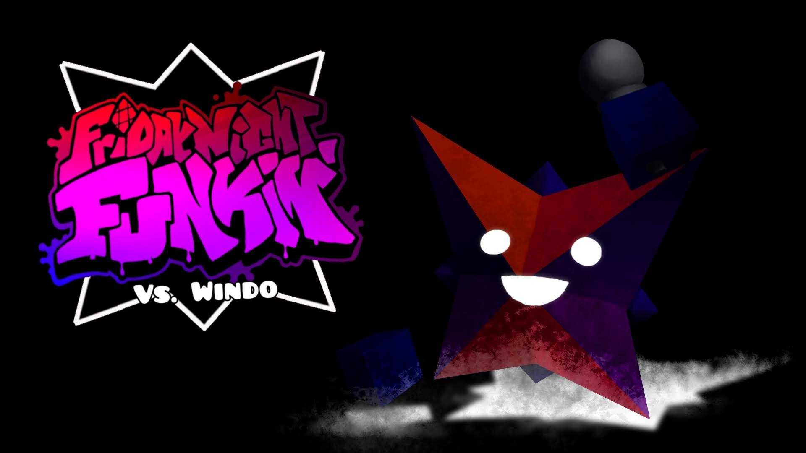
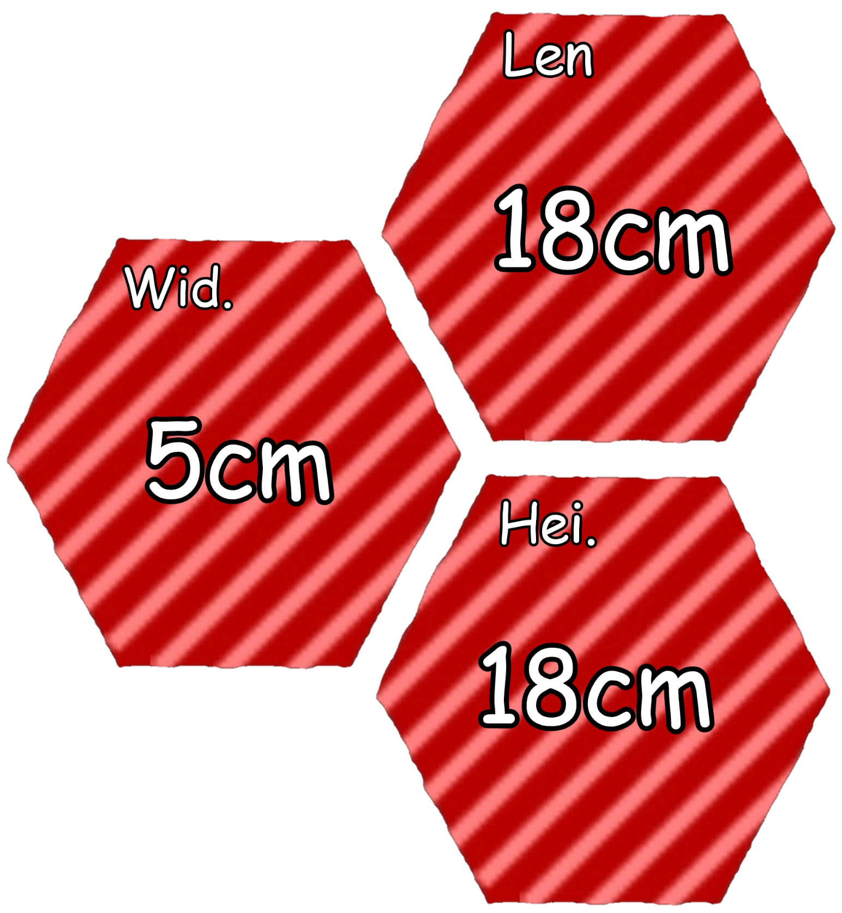
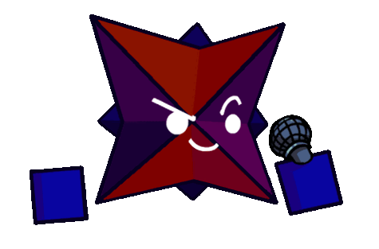
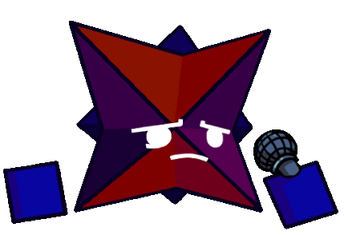
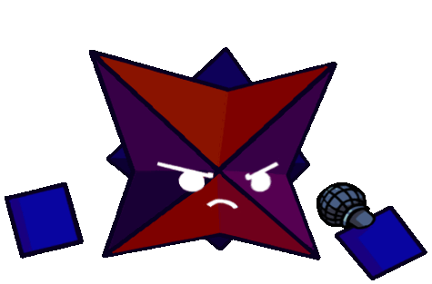
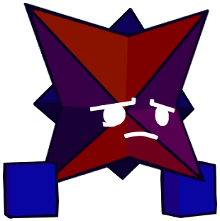
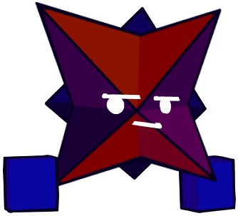
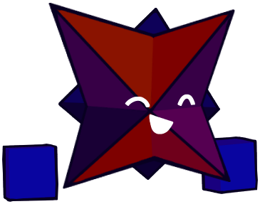


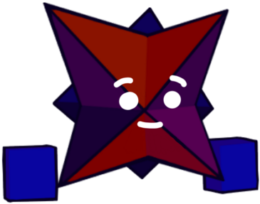


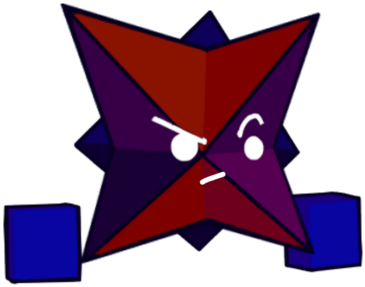
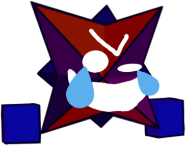
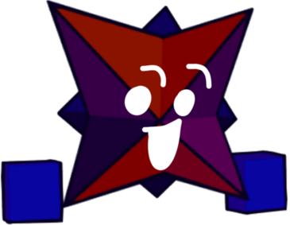
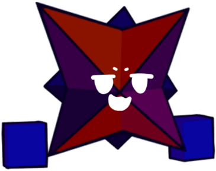
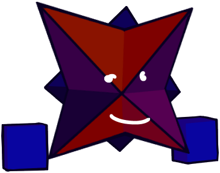
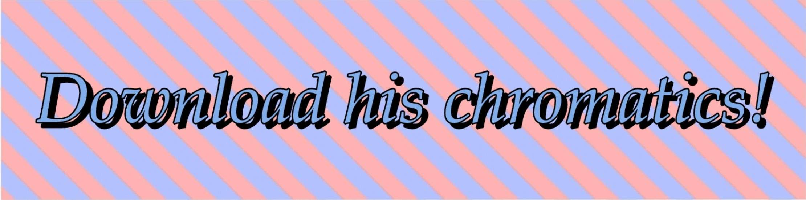
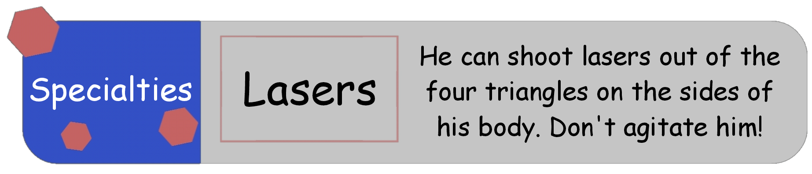
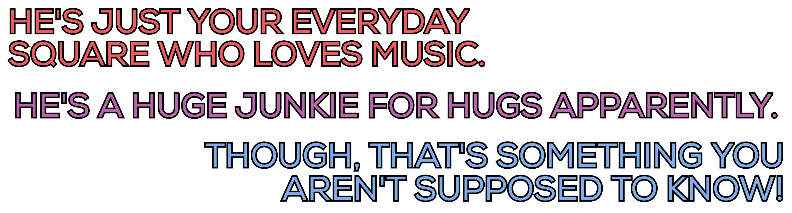
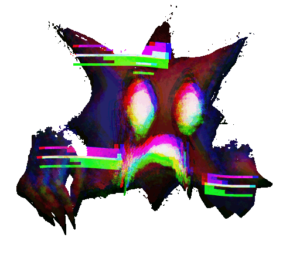
Enzo, also known as Dark ShyGuy, is depicted as a black cube wearing a white mask with gray straps, much like a ShyGuy from the Super Mario franchise. He has a black mouth and eyes which can move around the mask freely. He has two sun cosmetics on his mask where his cheeks would be, along with a maroon oval on the top of his mask. As to what the oval represents, we may never know!.
Enzo was originally rude and bullied others for the sake of it; a sadist. He was not morally evil, but rather a nemesis to someone a part of his group, ShyGuyGMD.
Over time, he would become more level-headed and adapt a sort of leader-role when needing to create plans against conflict. He still does not like ShyGuyGMD, but he is able to get along well with others, especially Windo, who he tries helping during Week 3 of vs. Windo.
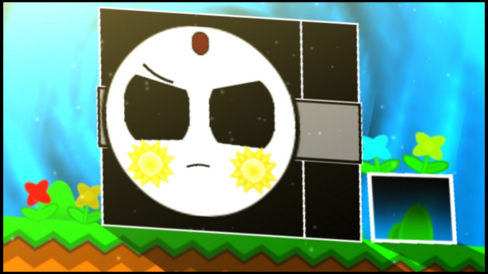
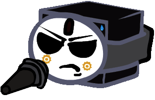
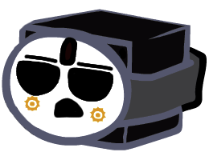
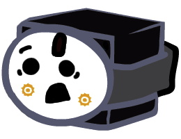
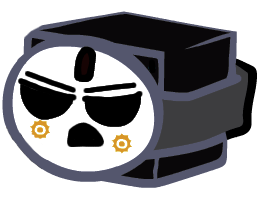
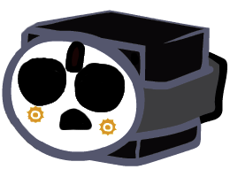
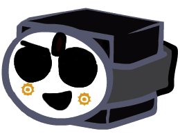
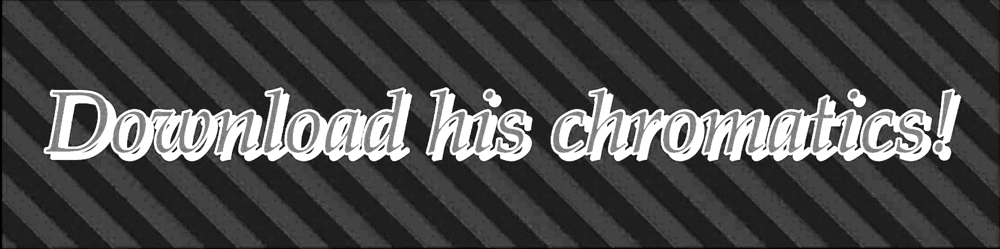
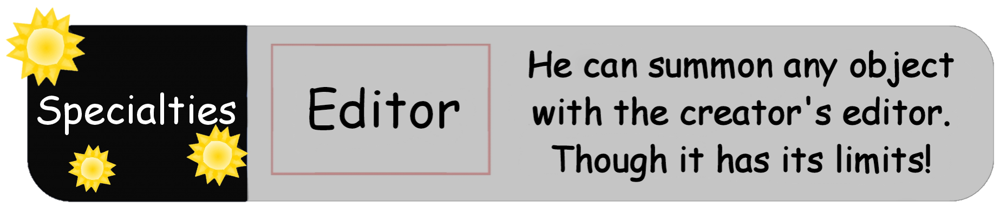
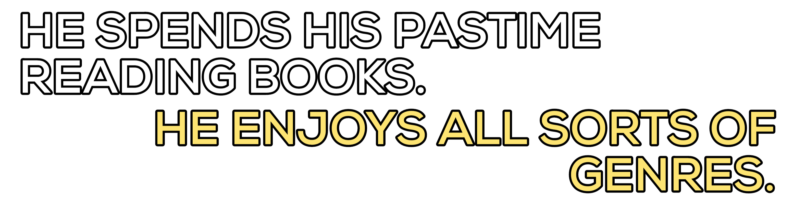